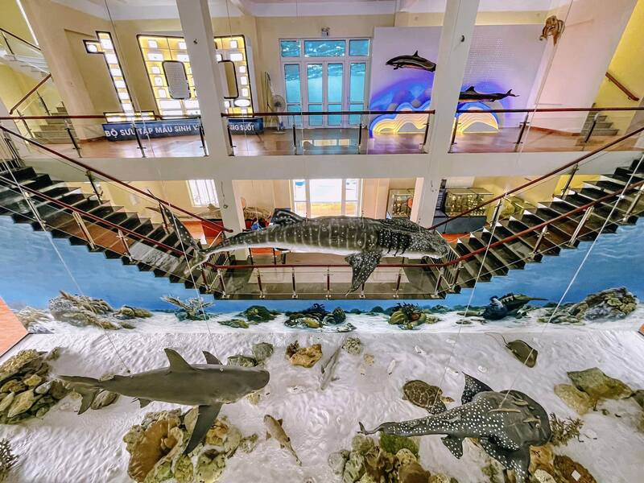
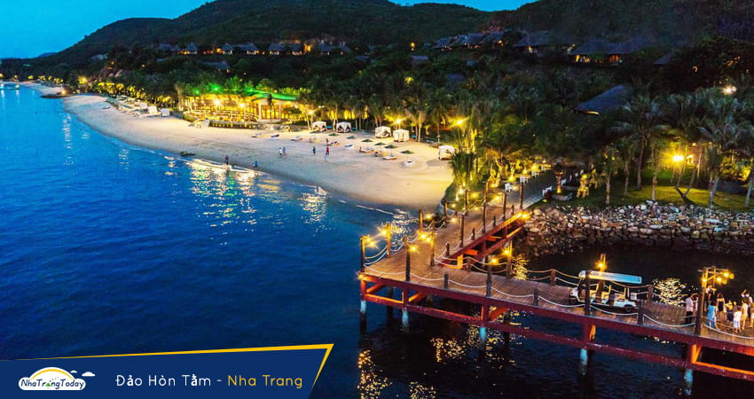

Điểm tham quan nổi bật
Khám phá những địa điểm tuyệt vời ở Nha Trang phù hợp với sinh viên
Cáp treo Vinpearl
Giải tríTrải nghiệm cáp treo dài nhất thế giới, “thiên đường của miền nhiệt đới” hấp dẫn mọi du khách.
Địa chỉ: 98B/13, Trần Phú, Lộc Thọ, Thành phố Nha Trang, Khánh Hòa
Tháp Bà Ponagar
Lịch sửTháp bà Ponagar là một trong những quần thể kiến trúc văn hóa Chăm Pa cổ lớn nhất ở miền Trung Việt Nam.
Địa chỉ: Đường Hai Tháng Tư, Vĩnh Phước, Thành phố Nha Trang, Khánh Hòa
Nhà thờ Núi
Tôn giáoKiến trúc Gothic tuyệt đẹp giữa trung tâm thành phố.
Địa chỉ: 31 Thái Nguyên, Phước Tân, Thành phố Nha Trang, Khánh Hòa

Viện hải dương học
Tham quanViện nghiên cứu cơ bản về hải dương học, tài nguyên và môi trường biển.
Địa chỉ: số 1, Cầu Đá, Trần Phú, thành phố Nha Trang, tỉnh Khánh Hòa.

Đảo Hòn Tằm
Tham quanĐảo Hòn Tằm là một điểm du lịch Nha Trang, Đảo Hòn Tằm đẹp mộng mơ với những hàng dừa chạy dọc trên bãi biển xanh ngát.
Địa chỉ: Vĩnh Nguyên, Tp Nha Trang, Khánh Hoà

Đảo Hòn Mun
Tham quanHòn đảo chinh phục bất kì trái tim khách du lịch nào đặt chân đến nơi đây bởi bãi cát trắng trải dài bất tận, bãi biển xanh rờn với những tổ yến hoang sơ cheo leo trên vách đá.
Địa chỉ: Cuối đường Trần Phú, thành phố Nha Trang.